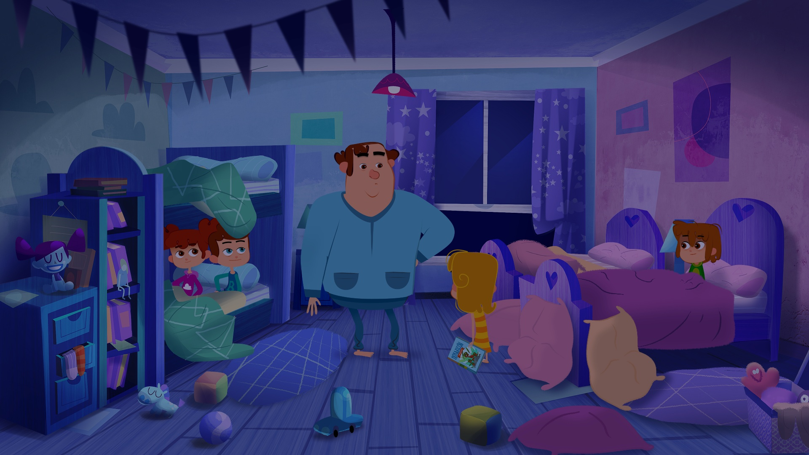
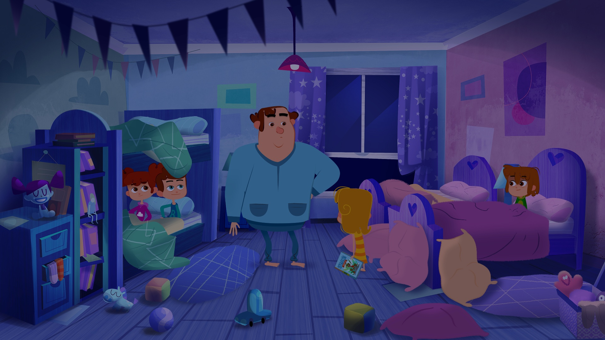

Óperas para soñar
 

Animación y ópera, música interpretada por Orquesta Sinfónica y Cantantes Líricos.
La imaginación nos acerca al universo mágico de la Ópera.
Cada capítulo gira en torno a una ópera clásica diferente.
Cada noche Rubén tiene la difícil tarea de hacer dormir a sus cuatro hijos, los cuentos no le dan resultado así que hace tiempo recurre a la Ópera para que sus hijos concilien el sueño.
Interpreta increíbles y divertidas historias basadas en fragmentos de óperas que los niños escuchan, disfrutan, interpretan con sus interesantes razonamientos y a veces cuestionan. Así, cada noche, con cariño, paciencia, y mucho ingenio musical, Rubén logra su comedido, conseguir que sus hijos se duerman.